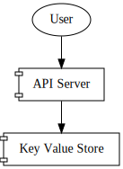
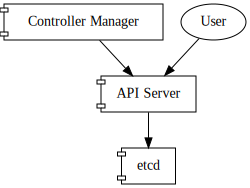
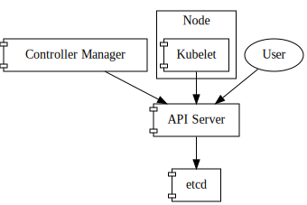
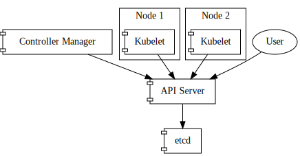
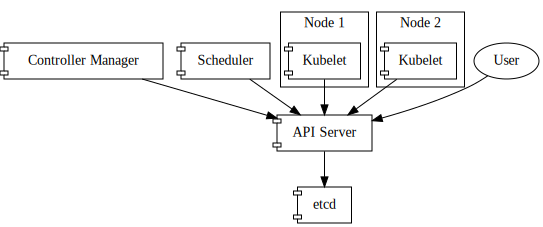
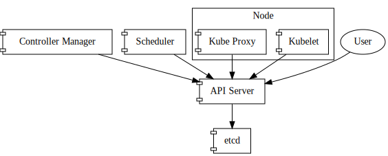
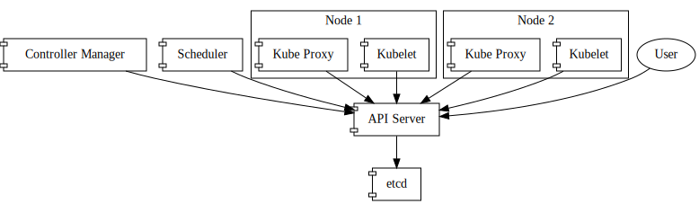

Components
The API Server
Let's start with a very simple overview, and build on top of that:

As users, we will use some kind of client to contact the API Server, allowing us to list, get, create, modify or delete resources.
These resources are stored by the API Server in some kind of Key Value Store. The ubiquitous Key Value Store used for Kubernetes is etcd. However, and as we'll discover later, any other backend implementing the etcd gRPC interface would work as well (this is the idea behind Kine, for example).
Now, we are able to create and manipulate resources. The API Server will be the piece that will perform Authentication, Authorization, and similar features for us, and will eventually store those resources into etcd. However, we are missing the reconciliation part yet.
The Controller Manager
For this, there is a component in Kubernetes called the Controller Manager. The Controller Manager has a number of controllers that can be opted-in, or opted-out. For the sake of simplicity, let's assume that we use the default ones.
The Controller Manager is just another client, in that it connects to the API Server in order to watch and manipulate resources.
Let's draw it.

Let's describe what the Controller Manager is, based on the official documentation:
[...] is a daemon that embeds the core control loops shipped with Kubernetes. In applications of robotics and automation, a control loop is a non-terminating loop that regulates the state of the system. In Kubernetes, a controller is a control loop that watches the shared state of the cluster through the apiserver and makes changes attempting to move the current state towards the desired state.
Now, what is the Controller Manager reconciling exactly? We are going to get a bit ahead of time here, but stay with me. Let me describe two Kubernetes concepts, in the easiest possible way:
- Pod: is a group of one or more containers.
- ReplicaSet: set of replica Pods. Guarantees the availability of a specified number of identical Pods.
A ReplicaSet allows us to configure a Pod template inside it, along with a number of replicas that we want running of that Pod.
As such, we as clients can directly create Pods, or we can create ReplicaSets.
ReplicaSets will be reconciled by the ReplicaSetController (one of the controllers bundled with the Controller Manager), and it will in turn create as many Pods as required based on the number of desired replicas.
Important: by creating a ReplicaSet, the ReplicaSetController in the Controller Manager reconciles the current state (no Pods exist for this Replica Set), to a new state (desired number of Pods exist for this Replica Set), by creating the Pods itself against the API Server. However, ReplicaSets and Pods are just resources sitting on our Key Value Store; nothing is running yet.
The Kubelet
The Kubelet is the Kubernetes node agent. It runs on every machine that is part of our cluster, and is another API Server client.
Let's draw it.

Provided we have two nodes in our infrastructure capable of running workloads, the diagram would look like this:

The Kubelet will then be yet another client of the API Server, watching for Pods that are assigned to it, and again, reconcile the current status (what pods are running right now on this machine?), with the desired status (what pods should be running right now on this machine?).
It will use a Container Runtime (such as Docker, cri-o or containerd), in order to manage the containers defined in Pods (creating, or deleting them).
Now, if we created a Replica Set, that resulted in Pods being created by the ReplicaSetController, how do these Pods get scheduled on any of the nodes, so the Kubelet on that node can then reconcile and create the real workloads?
The Scheduler
As you can imagine, its job is to schedule workloads. Let's get more into detail: the Scheduler is watching the API Server for Pods that are unscheduled, and will assign a node for each Pod, based on specific decision algorithms, also taking into account specific user-provided preferences for those workloads.
Let's draw it.

And so, again, the Scheduler is just another API Server client.
The Proxy
The Kubernetes Proxy (or kube-proxy) is yet another Kubernetes component running on all nodes of the cluster. Its main duty is to install networking rules on the host, so pods can reach internal service IP addresses.
Let's draw it.

The Kubernetes Proxy usually runs in a containerized fashion, but that is not relevant for the purpose of this diagrams. Let's draw it with two nodes again:

Some CNI providers have enabled the ability to not depend on the Kubernetes Proxy, such as cilium.